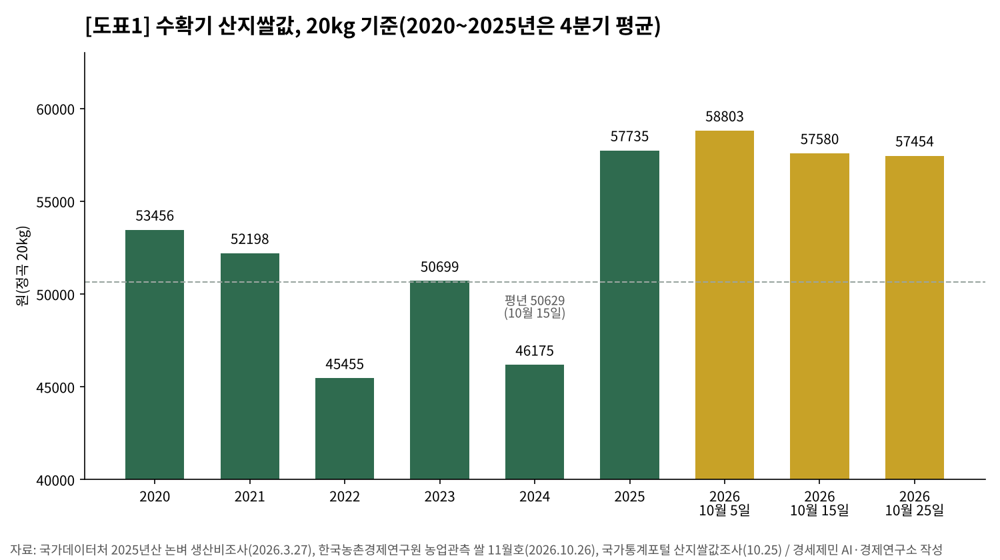
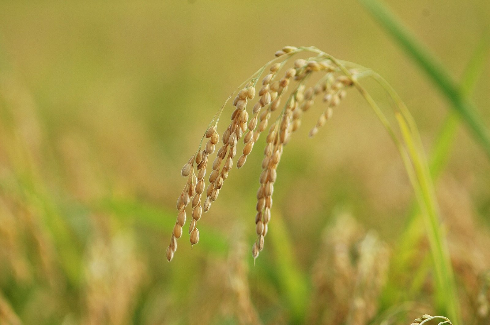
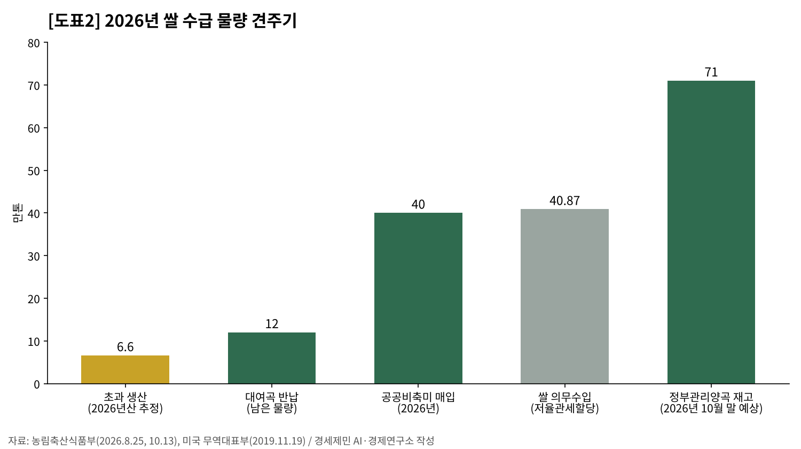
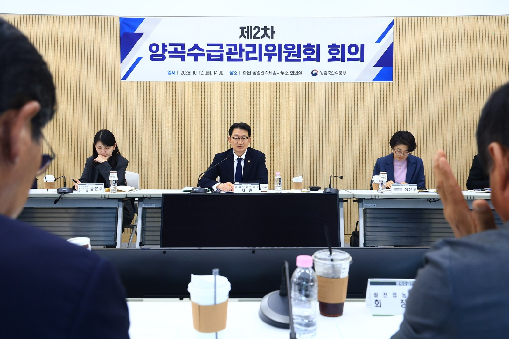
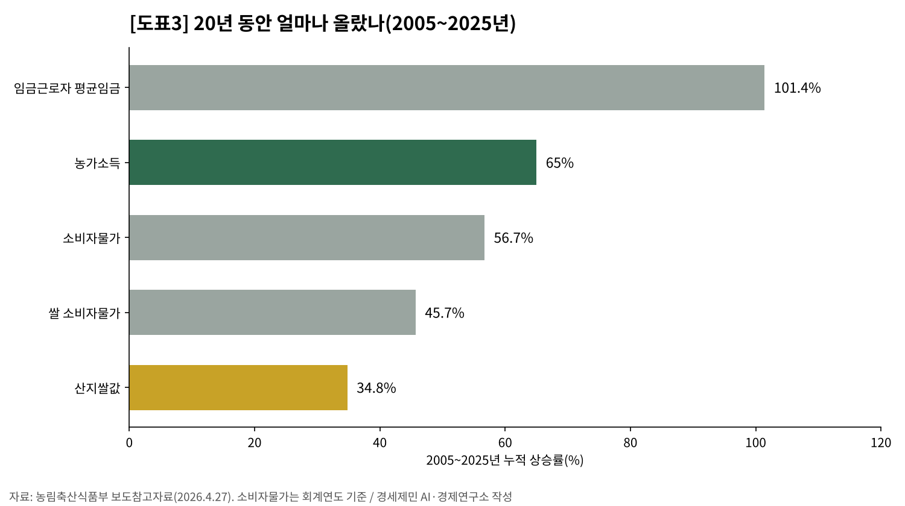
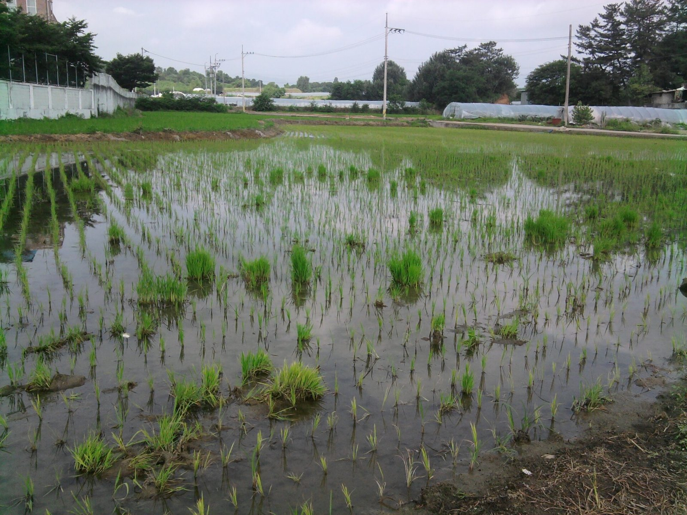
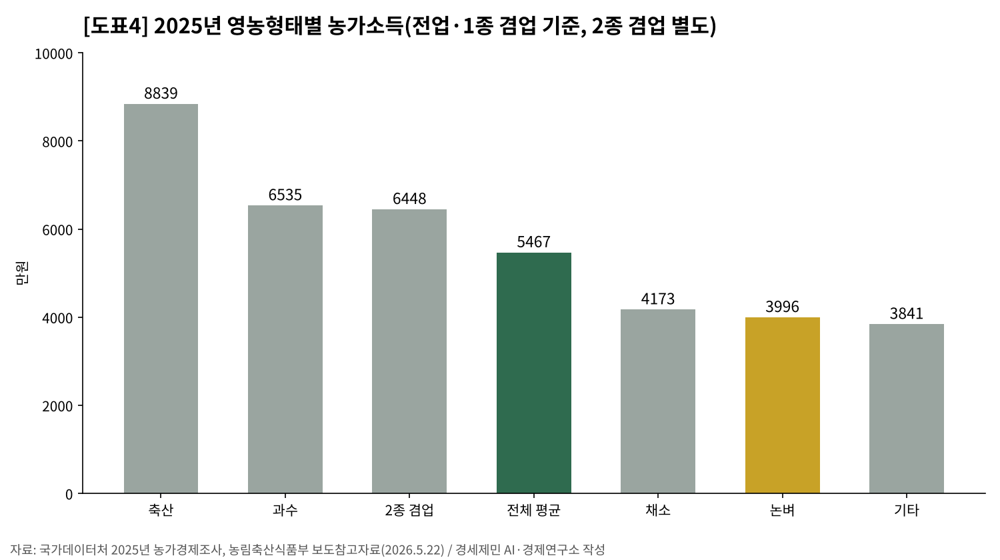
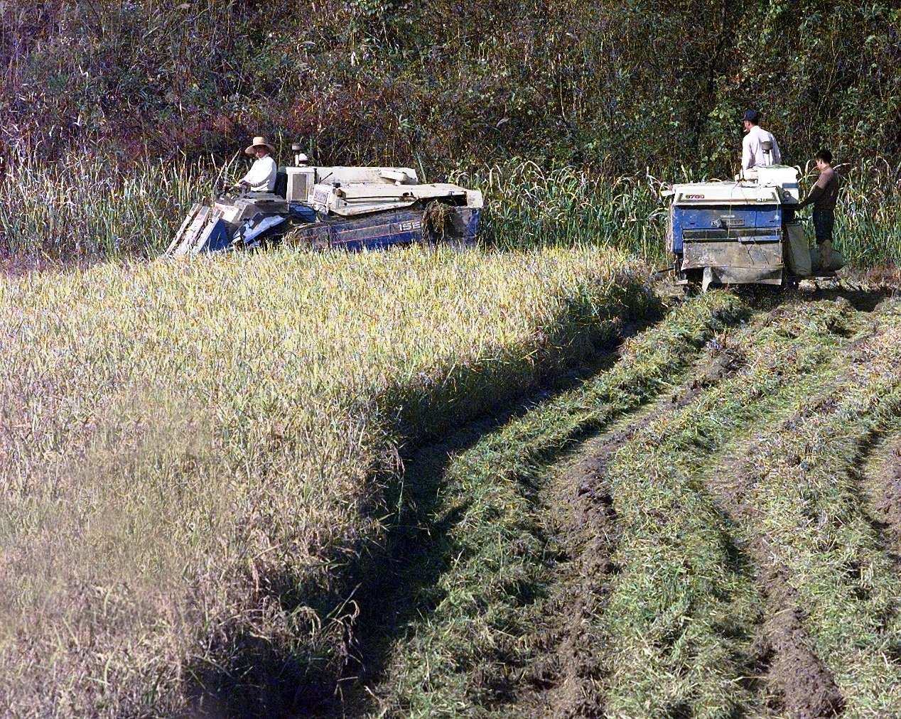

[쌀값 브리핑①] 햅쌀 예상생산 6년 만에 최저, 산지쌀값 20년 오름폭은 임금의 3분의 1
첫 산지쌀값 1년 전보다 5.1% 낮게 출발, 10월 25일 20kg 5만7454원으로 1년 전 수준 회복
남는 쌀 6만6000톤은 생산량의 1.9%… 개정 양곡관리법 첫 수확기, 법정 대책 범위 3~5%에 못 미쳐
논벼 농가 소득 3996만원으로 농가 평균의 73%… 전체 농가 소득 가운데 농사로 번 돈은 21%
1ha 벼농사 소득 736만원, 최저임금 1년치를 벌려면 3.4ha가 든다
AI경제저널=김갑봉 기자 | 올해 쌀 생산량이 351만8000톤으로 6년 만에 가장 적을 전망이다. 국가데이터처가 10월 8일 낸 예상생산량이다. 2020년 350만7000톤 뒤로 가장 적다. 벼 재배면적은 67만69ha로 1.1% 줄었다.
생산은 줄었지만 햅쌀 값은 지난해보다 낮게 출발했다. 10월 5일 산지쌀값은 20kg에 5만8803원으로 1년 전보다 5.1% 낮았다.
10월 15일에는 5만7580원으로 1년 전과 차이가 1.2%로 줄었다. 10월 25일에는 5만7454원으로 1년 전 같은 날보다 0.1% 높아졌다.
이번 수확기는 개정 「양곡관리법」이 8월 27일 시행된 뒤 처음 맞는 수확기다. 정부는 남는 쌀을 6만6000톤으로 본다. 생산량의 1.9%로, 시행령이 정한 의무 대책 범위의 아래 끝 3%에 못 미친다.
쌀값이 출렁일 때마다 소비자와 농가의 이해가 맞선다. 20년을 길게 놓고 보면 그림이 다르다. 임금이 두 배가 되는 동안 산지쌀값은 3분의 1 남짓 올랐다. 생산량과 값, 제도와 소득의 숫자를 차례로 맞댄다.

생산은 줄었는데 값은 낮게 출발했다
국가데이터처는 9월 10~22일 표본조사로 예상생산량을 냈다. 351만8000톤으로 지난해 353만9000톤보다 2만1000톤(0.6%) 적다. 2022년부터 다섯 해째 줄었고, 확정치는 11월에 나온다.
10a(1000㎡)당 생산량은 525kg으로 지난해보다 0.5% 늘었다. 9월 일조시간이 지난해보다 길어 낟알이 잘 여물었다.
그래도 재배면적이 1.1% 줄어 전체 생산은 줄었다. 국가데이터처는 전략작물직불제와 논 타작물 전환 사업을 면적 감소의 까닭으로 들었다.
올해 처음 도입한 수급조절용 벼가 1만1000ha다. 용도를 가공용으로 제한해 미리 시장에서 떼어 둔 벼다. 이 몫을 빼면 밥쌀로 나올 쌀은 346만톤으로 지난해보다 2.2% 적다.
한국농촌경제연구원은 이보다 더 줄 수 있다고 본다. 10월 중순 조사에서 예상 단수를 521~523kg으로 낮췄다.
늦게 거두는 중만생종 벼가 이삭이 패고 여무는 시기에 고온과 가뭄 피해를 입었다. 중만생종을 일찍 거둔 농가를 중심으로 작황이 나쁘다는 응답이 늘었다. 다만 전반적인 생육은 예년과 비슷하다고 봤다.
생산이 줄었는데도 값은 거꾸로 움직였다. 10월 5일 산지쌀값을 80kg 한 가마로 바꾸면 23만5212원이다. 1년 전 같은 날 24만7952원보다 1만2740원 낮다.
열흘 뒤 10월 15일에는 23만320원으로 2.1% 더 내렸고, 10월 25일에는 22만9816원으로 0.2% 더 내렸다.

1년 전과 견주면 출발선만 낮았다. 지난해에는 10월 5일 6만1988원에서 25일 5만7403원으로 내렸다. 열흘 사이 6.0%, 다시 열흘 사이 1.5% 떨어졌다.
올해는 내림폭이 작아 10월 25일 값이 지난해 같은 날을 0.1% 웃돌았다(연구소 계산). 10월 15일 값은 평년 같은 날보다 13.7% 높았다. 연구원은 지난해 값이 재고 감소와 수확 지연으로 이례적으로 올랐다고 봤다.
연구원은 올해 값이 내린 까닭으로 넉넉한 지난해산 재고와 외식·급식·가정 소비 감소, 일찍 거두는 조생종의 출하 증가를 꼽았다. 그러면서 10~12월 평균값은 지난해와 비슷하거나 조금 높은 강보합을 내다봤다.
농민의 걱정은 정부 전망과 다르다. 충북 진천의 한 농민은 한 농업 전문지 인터뷰에서 「10월 5일 기준 가격은 1년 중 쌀값이 가장 높은 날」이라며 하락을 걱정했다. 정부 매입가가 낮아지면 벼 매입의 절반 이상을 맡는 단위농협의 매입가도 따라 내려간다는 우려다.

남는 쌀 6만6000톤, 법이 정한 범위 아래
농림축산식품부는 10월 12일 양곡수급관리위원회 심의를 거쳐 다음 날 수급안정대책을 냈다. 수급조절용 벼를 뺀 생산량 약 346만톤 가운데 6만6000톤이 수요를 넘는다고 봤다. 생산량의 1.9%에 해당하는 양이다.
한국농촌경제연구원은 수율과 품위 저하로 초과 물량을 6만톤 안팎으로 보고 소폭 줄 수 있다고 전망했다. 생산량이 예상보다 적으면 남는 쌀도 그만큼 준다.
개정 양곡관리법 제16조의2는 수급이 불안할 때 매입을 포함한 대책을 세우게 했다. 그 대책을 꺼낼 기준은 같은 날 시행된 시행령 제16조의2가 범위로 정했다.
초과 생산량이 미곡 생산량의 3~5%일 때, 또는 7~9월 평균 쌀값이 평년보다 5~8% 낮을 때다. 평년은 직전 5년 가운데 최고와 최저를 뺀 3년 평균이다. 위원회가 그 범위에서 기준을 정하고, 위원회가 심의한 대책은 정부가 반드시 이행해야 한다.
올해 초과 비율 1.9%는 범위의 아래 끝 3%에 못 미친다. 올해 단경기인 7~9월 구곡 값은 평년보다 16.1% 높았다. 연구소는 두 조건 모두 법정 대책 범위에 들지 않는다고 본다(연구소 판단).
농식품부 관계자는 한 언론 인터뷰에서 별도 시장격리 없이도 초과 생산량을 관리할 수 있다고 말했다. 최종 생산량도 지금 예상치보다 크게 늘지 않는다고 봤다.
정부가 꺼낸 수단은 셋이다. 첫째인 대여곡 반납부터 보면, 정부는 지난해 5만5000톤, 올해 10만톤의 정부양곡을 빌려줬다. 아직 돌려받지 못한 12만톤을 올해 햅쌀로 받는다. 초과량보다 많은 양을 시장에서 거둬들이는 셈이다(연구소 판단).
둘째는 공공비축미 40만톤 매입이다. 매입량은 2024년 45만톤, 2025년 43만톤에서 올해 40만톤으로 줄었다.
대신 벼 40kg 한 포대에 미리 주는 중간정산금을 4만원에서 6만원으로 올렸다. 셋째는 정부와 농협의 벼 매입자금 3조9000억원이다.
농민단체는 공공비축 물량부터 문제 삼았다. 전국농민회총연맹 광주전남연맹 등은 10월 19일 기자회견에서 공공비축미 전국 매입량을 45만톤 이상으로 늘리라고 요구했다.
단체들 자료로는 전남광주의 올해 기본 배정량이 14만9149톤으로 지난해 최종 매입량보다 17.3% 적다. 단체들은 수급조절용 벼 사업이 현장 여건을 충분히 반영하지 못했다고 지적했다.

김종구 농식품부 차관은 이번 대책이 개정 양곡관리법 시행 뒤 처음 세운 수확기 대책이라고 의미를 두었다. 선제적 수급조절로 적정 생산 기반을 마련했다는 설명이다. 최종 생산량을 보고 필요하면 추가 조치를 내놓겠다고 했다.
법은 정부가 해마다 양곡수급계획을 세워 적정 벼 재배면적과 논 타작물 면적을 정하게 했다. 논에 벼 대신 다른 작물을 심는 농가에 주는 전략작물직불 예산은 지난해 2440억원에서 올해 4196억원으로 늘었다.
개정법의 무게중심이 사후 매입보다 사전 감산에 있다는 뜻이다(연구소 판단). 남은 뒤 사들이는 비용을 줄이는 대신 덜 심는 부담을 농가와 나누는 구조다(연구소 판단).

남는 쌀과 견줄 숫자가 하나 더 있다. 한국은 세계무역기구 양허표에 따라 해마다 쌀 40만8700톤을 5% 저율관세로 들여온다. 올해 초과 생산량의 6.2배다(연구소 계산). 다만 정부 초과량 셈에 수입쌀이 어떻게 들어갔는지는 밝혀져 있지 않아 셈법이 다른 두 숫자다.
이 가운데 13만2304톤은 2019년 합의로 미국산에 해마다 보장된 몫이다. 수입쌀이 밥쌀과 가공용으로 어떻게 나뉘는지는 따로 봐야 한다.
20년 동안 산지쌀값은 임금의 3분의 1만큼 올랐다
올봄에는 소비자 쪽에서 쌀값 부담이 커졌다. 정부는 2월 정부양곡을 최대 15만톤 풀기로 하고 3월 13일부터 1차로 10만톤을 공급했다. 4월 22일 소비자쌀값은 20kg 6만2455원으로 1년 전보다 13.5% 높았다.
정부는 같은 달 보도참고자료에서 긴 흐름을 함께 보자고 했다. 2005~2025년 소비자물가(회계연도 기준)는 56.7% 올랐다. 쌀 소비자물가는 45.7% 올랐다. 같은 기간 임금근로자 평균임금은 101.4% 올랐고, 산지쌀값은 34.8% 올랐다.

임금이 두 배가 되는 동안 농민이 받는 쌀값은 3분의 1 남짓 올랐다. 산지쌀값 상승률은 임금 상승률의 34.3%다(연구소 계산). 같은 기간 농가소득 증가율은 65%로 평균임금 증가율에 못 미쳤다.
물가 상승분을 빼고 보면 차이가 더 크다. 같은 기간 소비자물가(회계연도 기준)로 나눈 실질 산지쌀값은 약 14.0% 내렸다(연구소 계산). 두 통계의 기간 기준이 꼭 같지는 않다.
쌀 소비자물가가 45.7% 오를 때 산지쌀값은 34.8% 올랐다. 그 사이 도정과 유통 단계의 몫이 커졌을 가능성이 있다(연구소 판단). 생산자와 소비자 사이 어디에 몫이 쌓였는지는 따로 따져야 한다.
정부는 20kg 6만3000원을 기준으로 밥 한 공기 값을 약 284원으로 셈했다. 정부가 인용한 조사에서 쌀이 비싸다는 응답은 10.7%였다.
정부는 지난해 쌀값 상승을 회복 측면에서 봐야 한다고 설명했다. 국가데이터처 생산비조사를 보면 수확기 산지쌀값(20kg, 4분기)은 2021년 5만2198원에서 2022년 4만5455원으로 떨어졌다. 2023년 5만699원으로 올랐다가 2024년 4만6175원으로 다시 내렸다.
2025년에야 5만7735원으로 올랐다. 2020년 5만3456원보다 8.0% 높은 값이다(연구소 계산).
반면 소비자 쪽 부담도 컸다. 4월 22일 소비자쌀값은 평년보다 17.5% 높았다. 쌀값을 두고 생산자와 소비자의 이해가 엇갈리는 까닭이다.

논벼 농가 소득은 평균의 73%
국가데이터처 생산비 조사를 보면 쌀값이 오른 2025년 10a당 논벼 총수입은 134만8651원이다. 경영비 61만2346원을 빼면 소득은 73만6304원이다. 1년 전 57만1863원보다 28.8% 늘었다.
이 소득을 1ha로 늘리면 736만3040원이다. 2025년 최저임금(시급 1만30원)을 월 209시간 기준으로 1년 받으면 2515만5240원이다.
벼농사로 그만큼 벌려면 약 3.4ha가 든다(연구소 계산). 노동시간이 아니라 경작 규모로 견준 값이다. 땅이 작은 농가일수록 벼농사만으로 살림을 꾸리기 어렵다(연구소 판단).
쌀값이 낮던 2024년이면 더 넓어야 한다. 10a당 소득 57만1863원으로 셈하면 그해 최저임금 1년치(2472만8880원)에 약 4.3ha가 든다(연구소 계산). 이 소득에는 농가 자신의 땅과 농기계 몫도 섞여 있다.

2025년 농가소득은 평균 5467만원으로 역대 가장 많았다. 그러나 논벼를 주로 짓는 전업·1종 겸업 농가는 3996만원으로 평균의 73.1%다. 축산 농가 8839만원의 45.2%다(연구소 계산).
전체 농가 평균으로 보면 농사로 번 농업소득은 1171만원으로 전체의 21.4%다. 공익직불금과 기초연금 같은 이전소득은 1990만원으로 36.4%를 차지한다(연구소 계산). 다섯 몫 가운데 한 몫만 농사에서 나온 셈이다.
경영주 나이에 따라서도 소득이 갈린다. 나이별 농가소득은 50세 미만 8430만원, 50대 7681만원, 60대 6856만원, 70세 이상 4297만원이다. 70세 이상은 50대의 55.9%다(연구소 계산). 쌀 농가만이 아니라 전체 농가 값이다.

위험은 줄어드는 밥상과 줄어드는 논에 있다
첫째 위험은 줄어드는 수요다. 2025년 1인당 쌀 소비량은 53.9kg으로 1년 전보다 3.4% 줄었다. 하루로 치면 147.7g이다. 30년 전인 1995년 106.5kg의 절반이다. 감소율은 2024년 1.1%에서 2025년 3.4%로 커졌다.
올해도 수요는 줄고 있다. 9월 소매유통업체 쌀 판매량은 약 3만5000톤으로 1년 전보다 10.4% 줄었다. 8월 외식·급식업 쌀 구매량도 6.8% 줄었다. 수요가 이 속도로 줄면 적정 면적은 해마다 더 좁아진다(연구소 판단).
가공 쪽에는 반대 흐름도 있다. 2025년 식료품 제조업의 쌀 소비량은 79만1656톤으로 1년 전보다 35.4% 늘었다. 사업체 쌀 소비는 떡류와 주정, 조리식품 순으로 많다. 밥상에서 빠진 쌀이 공장으로 옮겨 가고 있다(연구소 판단).
둘째는 감산의 부담이 누구에게 가느냐다. 개정법은 남은 뒤 사들이기보다 덜 심게 하는 쪽으로 무게를 옮겼다. 줄어든 면적만큼 다른 작물의 판로와 값이 받쳐 주지 않으면 그 부담은 농가가 진다(연구소 판단).
셋째는 값을 받칠 장치의 빈자리다. 농식품부는 9월 10일 첫 농산물가격안정심의위원회를 열었다. 농산물가격안정제는 평년 도매가격의 80% 수준을 보장하는 제도다. 올해 대상은 마늘과 양파 둘이고, 쌀은 들어 있지 않다. 생산자 위원들은 대상 품목을 늘리자고 요구했다.
넷째는 통상의 문턱이다. 저율관세할당 물량 40만8700톤은 협정으로 해마다 들여오기로 약속한 양이다. 감산은 국내 농가가 지고, 수입 물량은 협정이 정한다(연구소 판단). 수입 물량과 국내 감산을 함께 보지 않으면 수급 대책이 한쪽으로 기운다(연구소 판단).

물어야 할 것
연구소는 정부와 국회, 쌀 주산지 지방정부에 묻는다. 정부에는 양곡수급관리위원회가 법정 범위 안에서 정한 올해 수급불안 기준값이 얼마인지 묻는다. 기준값을 공개해야 농민도 언제 정부가 움직이는지 미리 안다.
국회에는 2027년 예산 심사를 묻는다. 농산물가격안정제 대상을 늘릴 예산과 전략작물 판로 지원이 그 안에 들어가는지 따져야 한다. 쌀을 가격안정제 대상에 넣을지도 묻는다.
전남광주통합특별시·충남·전북처럼 쌀을 가장 많이 내는 지방정부에는 고령 농가의 소득 대책을 묻는다. 세 곳이 올해 예상생산량의 55.7%를 낸다(연구소 계산). 감산 목표를 받아 내려보내기만 해서는 농가 살림이 버티기 어렵다(연구소 판단).
확인하지 못한 것
10월 25일 산지쌀값과 1년 전 같은 날 값은 국가데이터처 국가통계포털 산지쌀값조사 표(10월 27일 갱신)에서 확인했다. 11월 5일 조사 값은 이 글을 쓸 때 나오지 않았다. 쌀의 최종 생산량은 11월에 나온다.
양곡수급관리위원회가 올해 실제로 정한 수급불안 기준값은 공개 자료에서 찾지 못했다. 올해가 의무 대책 범위에 들지 않는다는 판단은 시행령 범위의 아래 끝(3%, 5%)과 견준 연구소 판단이다.
수입쌀이 밥쌀과 가공용으로 어떻게 나뉘는지, 정부 초과량 셈에 어떻게 들어가는지는 이번에 확인하지 못했다.
쌀 농가만 떼어 낸 경영주 나이 분포는 이번에 확인하지 않았다. 4절의 나이별 소득은 전체 농가 값이다. 쌀 주산지 세 곳의 고령 농가 비중은 다음 편에서 농림어업조사 원문으로 확인한다.
보도에 걸리는 것
「쌀값 5.1% 하락」과 「1.2% 하락」이 함께 돈다. 앞은 10월 5일, 뒤는 10월 15일 조사를 1년 전 같은 날과 견준 값이다.
「2.1% 하락」과 「0.2% 하락」은 10월 15일과 25일 값을 열흘 전과 견준 값이다. 10월 25일 값은 1년 전 같은 날보다는 0.1% 높다. 평년과 견주면 10월 15일 값은 13.7% 높다.
생산량도 세 가지 값이 섞인다. 351만8000톤은 수급조절용 벼를 넣은 전체 예상치다. 346만톤은 그 벼를 뺀 밥쌀용이다.
도정 기준을 바꿔 현백률 90.4%로 셈하면 342만4000톤이다. 초과 생산 6만6000톤은 346만톤을 기준으로 셈했다.
1ha당 소득과 최저임금의 비교는 연구소 계산이다. 소득은 총수입에서 경영비를 뺀 값으로, 농가 자신의 노동과 땅과 자본 몫을 함께 담는다.
노동 몫만 떼어 낸 값이 아니다. 또 수확 후 유통비용을 빼지 않은 값이다. 이 비교는 경작 규모를 보여 줄 뿐, 시간당 노동 대가를 견준 것이 아니다.
참고문헌
공식 발표자료
- 국가데이터처 농어업통계과, 「2026년 쌀 예상생산량조사 결과」, 보도자료, 2026년 10월 8일, https://mods.go.kr/board.es?mid=a10301000000&bid=228&act=view&list_no=447409
- 국가데이터처, 「산지쌀값조사 — 정곡(일반계, 20kg, 비추정평균가격), 월」, 국가통계포털 통계표 DT_1EI10122, 2026년 10월 27일 갱신, https://kosis.kr/statHtml/statHtml.do?orgId=101&tblId=DT_1EI10122
- 국가데이터처 농어업동향과, 「2025년산 논벼(쌀) 생산비조사 결과」, 보도자료, 2026년 3월 27일, https://www.korea.kr/briefing/pressReleaseView.do?newsId=156751371
- 국가데이터처 농어업동향과, 「2025년 양곡소비량조사 결과」, 보도자료, 2026년 1월 22일, https://mods.go.kr/board.es?mid=a10301000000&bid=230&act=view&list_no=443168
- 「양곡관리법 시행령」 제16조의2(수급불안의 범위), 대통령령 제36617호, 2026년 8월 25일 일부개정, 2026년 8월 27일 시행, 국가법령정보센터, https://www.law.go.kr/법령/양곡관리법시행령
- 고용노동부, 「2025년 적용 최저임금 시간급 10,030원」, 보도자료, 2024년 8월 5일, https://www.moel.go.kr/news/enews/report/enewsView.do?news_seq=16902
- 농림축산식품부 식량정책과, 「쌀 가격 급등락 없도록 수급 안정 총력... 쌀값 상승폭 커 보여도 회복 측면 고려 필요」, 보도참고자료, 2026년 4월 27일, https://www.mafra.go.kr/bbs/home/792/577754/artclView.do
- 농림축산식품부 농업정책과, 「'25년 역대 최고 농가소득 5,467만 원 달성」(국가데이터처 「2025년 농가경제조사 결과」 인용), 보도참고자료, 2026년 5월 22일, https://www.mafra.go.kr/bbs/home/792/577994/artclView.do
- 농림축산식품부 식량정책과, 「2026년 공공비축 시행계획 및 2027 양곡연도 정부관리양곡 수급계획 국무회의 의결」, 보도자료, 2026년 8월 25일, https://www.mafra.go.kr/bbs/home/792/578842/artclView.do
- 농림축산식품부 식량정책과, 「양곡관리법 시행, 선제적 수급 조절 정책을 통한 시장 안정 도모」(참고 「양곡관리법 개정 주요 내용」), 보도자료, 2026년 8월 26일, https://www.mafra.go.kr/bbs/home/792/578852/artclView.do
- 농림축산식품부 원예산업과, 「평년 도매가격의 80% 수준으로 농가소득 보장, 농산물가격안정제 본격 시행」, 보도자료, 2026년 9월 10일, https://www.mafra.go.kr/bbs/home/792/579145/artclView.do
- 농림축산식품부 식량정책과, 「2026년 쌀 수급안정대책 마련」, 보도자료, 2026년 10월 13일, https://www.mafra.go.kr/bbs/home/792/579408/artclView.do
- 미국 무역대표부(USTR), "United States and South Korea Reach Agreement on Guaranteed Market Access for American Rice", 보도자료, 2019년 11월 19일, https://ustr.gov/about-us/policy-offices/press-office/press-releases/2019/november/united-states-and-south-korea
연구보고서
- 한국농촌경제연구원 농업관측센터(박한울·김다정), 『농업관측 쌀 2026년 11월호』 통권 제1415호, 2026년 10월 26일, https://aglook.krei.re.kr/main/uObserveMonth/OVR0000000070
언론 보도(교차 확인용)
- 정영록, "산지 쌀값 23만원대 「안정세」…「식량안보 직결, 적정생산 유지」", 아시아투데이, 2026년 10월 21일, https://www.asiatoday.co.kr/kn/view.php?key=20261022010007275
- 유영선, "올해산 쌀값, 정부는 「안내려간다는데」 농민은 「내려간다」 걱정", 농업인신문, 2026년 10월 30일, https://www.nongupin.co.kr/news/articleView.html?idxno=208674
- 조은정, "전남광주특별시 농민단체 「공공비축미 5만톤 더 배정하라」", 뉴스핌, 2026년 10월 19일, https://www.newspim.com/news/view/20261019001093
도표 출처
- [도표1] 경세제민 AI·경제연구소 작성, 자료 국가데이터처 「2025년산 논벼(쌀) 생산비조사 결과」(2020~2025년 4분기 평균), 한국농촌경제연구원 『농업관측 쌀 2026년 11월호』(2026년 10월 5일·15일 값, 평년), 국가데이터처 국가통계포털 산지쌀값조사(10월 25일 값)
- [도표2] 경세제민 AI·경제연구소 작성, 자료 농림축산식품부(2026년 8월 25일·10월 13일), 미국 무역대표부(2019년 11월 19일)
- [도표3] 경세제민 AI·경제연구소 작성, 자료 농림축산식품부 보도참고자료(2026년 4월 27일)
- [도표4] 경세제민 AI·경제연구소 작성, 자료 국가데이터처 「2025년 농가경제조사 결과」, 농림축산식품부 보도참고자료(2026년 5월 22일)
[사진 출처]
- [사진1] Nt, "Rice Paddy in Ganghwa Island 1.jpg", 위키미디어 공용, 2024년 5월 7일 촬영, CC0, https://commons.wikimedia.org/wiki/File:Rice_Paddy_in_Ganghwa_Island_1.jpg
- [사진2] Park Misoo, "Byeo (Japonica rice).jpg", 위키미디어 공용(픽사베이 원본), 2005년 9월 25일 촬영, CC0, https://commons.wikimedia.org/wiki/File:Byeo_(Japonica_rice).jpg
- [사진3] 농림축산식품부, 「2026년 쌀 수급안정대책 마련」 보도자료 첨부 「제2차 양곡수급관리위원회 회의 사진」, 2026년 10월 13일, https://www.mafra.go.kr/bbs/home/792/579408/artclView.do (공공기관 보도사진, 공공누리 제1유형 출처표시)
- [사진4] Salamander724, "Korean Rice Paddy Field.jpg", 위키미디어 공용, 2013년 7월 1일 촬영, 퍼블릭 도메인, https://commons.wikimedia.org/wiki/File:Korean_Rice_Paddy_Field.jpg
- [사진5] SRA Jeffrey Allen(미 공군), "South Koreans harvest rice in the Demilitarized Zone of Korea, 1988.JPEG"(미 국방부 사진번호 981008-F-2171A-502), 위키미디어 공용, 1998년 촬영(파일 이름의 1988은 사진번호·설명면 날짜와 다르다), 퍼블릭 도메인, https://commons.wikimedia.org/wiki/File:South_Koreans_harvest_rice_in_the_Demilitarized_Zone_of_Korea,_1988.JPEG
- [사진6] F. H. King, 『Farmers of Forty Centuries』(1911) 369쪽 사진, 위키미디어 공용, 퍼블릭 도메인, https://commons.wikimedia.org/wiki/File:Farmers_of_forty_centuries_-_Korean_rice_fields_being_transplanted.jpg
※ 이 브리핑은 AI 프로그램 클로드를 활용해 작성했습니다.
관련기사
- [한국경제 불편한 진실⑭] 식량 — 값싼 수입 밥상은 공짜가 아니라 '보험 미가입'이다
- [주택공급 브리핑①] 수도권 착공 목표 26만8000호, 정부 전망도 최대 5만호 미달
- [일자리·임금] 가계소득 늘어난 몫의 69%는 나랏돈이었다
- [대미투자 브리핑①] 대미 전략투자 첫 송금 24억달러, 1·2호 사업 규모가 한도 2000억달러의 최대 71%
저작권자 © AI경제저널 무단전재 및 재배포, AI학습 및 활용 금지